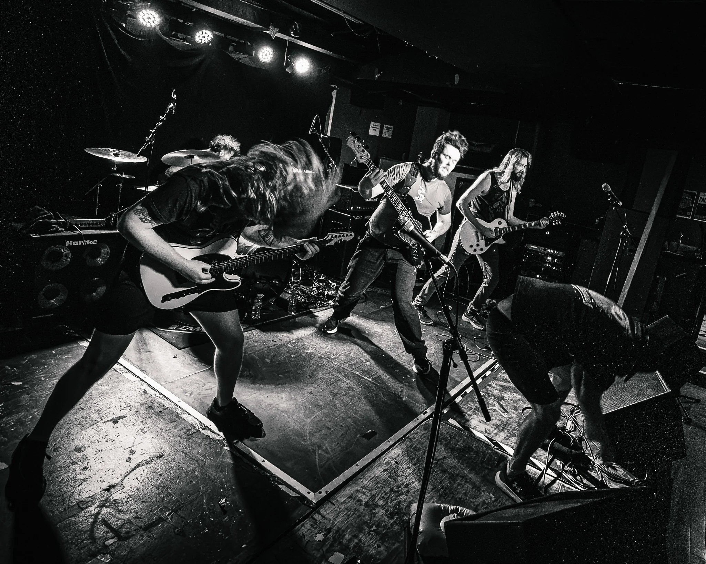

Michael
Ralph
Photographer · Videographer · Content Creator
Music. People. Places. Motion.
Explore portfolio →
Portfolio
Five bodies of work spanning live music, urban observation, portraiture, landscape and analogue photography.


Behind the camera.
I'm a photographer, videographer and content creator based in Guildford, Surrey. My work spans live music, portraiture, urban photography, landscape and analogue photography, with a particular interest in atmosphere, movement and visual storytelling.
About Michael →Creative services
Photography, video and content for artists, venues, brands and independent creators.
Gig, venue and event photography with edited images ready for social, press and promotion.
02 Artist ContentPortraits, promotional imagery and short-form video built around an artist or band.
03 Portrait / EditorialLocation-led portraits and editorial imagery with a strong visual mood.
04 Video & SocialShort-form video, reels and social-first content for creative projects and campaigns.
Have a project in mind?
Available for commissions, collaborations, live events and creative content projects.
Get in touch